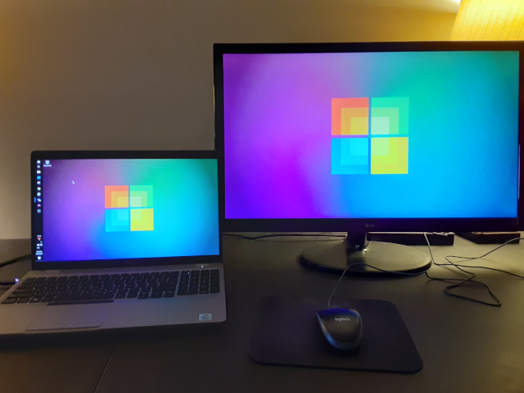

Aventiv
2021-03-28

Summary
I'm working remote as a full time UX/UI Designer for Aventiv.
My focus is 100% on UX/UI Design.
I enjoy using Adobe XD to design prototypes for web, mobile, and other applications.
Its great working with a positive and professional team of talented individuals.
Company
Aventiv Technologies is a holding company that owns and manages subsidiaries.
Here's what they say on their company website,
"Aventiv Technologies is a diversified technology company that provides innovative solutions to customers in the corrections and government services sectors. Aventiv is the parent company to Securus Technologies and AllPaid, leading providers of innovative products and services. The collective power of these unified organizations deliver superior value and service to all of our customers nationwide."
Role
 Example of Adobe XD
Example of Adobe XD
As a UX/UI Designer I use the Adobe Creative suite of applications. Which includes Adobe Photoshop, Adobe Illustrator, and Adobe XD. My main focus is using Adobe XD to design web application prototypes as a blueprint for the front-end developers to create working code from.
Having previous experience as a UI Developer helps me communicate with them regarding the limitations in HTML and CSS.
I always have a positive "Can Do!" attitude.
Team
Due to the pandemic the entire company works remote.
Because of this I've only interacted with the team through chat and virtual meetings.
The diverse team is spread across many different states.
Their main headquarters is based in Texas so we all operate on central time.
Everyone on the team has been kind, helpful, and professional. I enjoy collaborating with them to create solutions.
Technology

Aventiv Technologies purchased other technology companies.
Those subsidiary companies were already using specific web development stacks. Because of this there are many different technologies in place, depending on the project in question.
They have projects using one or more of the following:
- Angular
- React
- PHP
- C#
All the designers, except me, are using Apple Mac computers with Adobe Creative suite. I dislike Apple so I specifically requested a Window 10 laptop. I prefer Linux but that's not an option in this environment.
The majority of the executive team and developers are using Windows 10 laptops. They use JIRA for project and task management.
Securus Technologies is a Microsoft partner so they use Micosoft Teams internally for chat, video calls, and remote collaboration. Along with the standard Microsoft Office collection of applications.
They have a VPN that allows remote employees to access the Securus network, intranet, JIRA, and SharePoint server.
Projects
I was hired to design Adobe XD prototypes for the AllPaid project. Now I'm the UX/UI Designer for the whole company. Providing low-fidelity and high-fidelity prototypes and assets for an array of different projects.
Which include: AllPaid, PaySupreme, PayPremier, GovPayNet, JPay, and Aventiv Kiosk.
Due to being under a corporate NDA I'm unable to show any company images or designs. So instead, here are links to some of the project's public home pages that I've worked on.